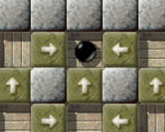

Level of the MonthEach month, we take a closer look at excellent Enigma levels. Excellent levels are those with the highest average user ratings and the greatest number of ratings altogether. Thus it is your vote that determines the Level of the Month. So please rate the levels you play and do not forget to submit your ratings together with your scores at the end of each month. You can find all previous Levels of the Month in our archive. November 2007: “Big Adventures” by Jon 'WB' Sneyers“Greetings, adventurer! The road ahead is long and dangerous, so be careful!” Jon left us a short, accurate welcome message at the beginning of his epic level. He encourages us to try and solve all the little riddle-pearls he lined up in this jewel from Enigma 0.92. And in the milky luster of each of these little polished pearls, the reminiscence of yet another vintage level flashes, or the vision of a level to come, each in a new and elegant way, briefly capturing the beauty of their myriad puzzles, in much the same way a haiku captures the entirety of a moment in just three lines ... let's pause for this moment and amble through the Level of the Month November 2007, “Big Adventures”! 
Enigma IV # 100 - Big Adventures
Not much has changed in the ratings of the previous LotMs: “Quadropolis” collected three more ratings, and lost its advance. Now, “Quadropolis” and “Island Labyrinth” are neck and neck, two months before the final “Level of the Year” announcement! “Big Adventures” enters the competition at place 8, and will surely keep its deserved position among the top ten levels in Enigma for many more LotMs to come. As always, you can find more details about the ratings on the LotM archive page. “'Big Adventures' is a much more easy and pleasant level to play”Jon's classic level leads us straight back to the roots of Enigma and even the great Oxyd series itself. It is the second epic level only after “Labyrinth of Puzzles” and offers us a perspective: Already the initial scene presents us one of the most used patterns in Enigma: Three woods in a row. We know this combination by heart, and how to solve it, and a smile rushs over my face when I read the occassional question on mag-heut, how to tackle “Jam” from Oxyd Magnum. When I first encountered “Big Adventures”, the same smile ran over my face and I pushed the three blocks in an almost absent mood - only to notice that, this time, there would be more: I forgot the water. And now I had one wood too few to bridge it. After all these years, Jon was able to show me yet another twist on this old pattern. And I suddenly embraced this level …

Why is everybody pointing at me?
To be able to write a comment about 'Big Adventures' first I had to retry
solving it and, while doing so, to succeed in being even faster than the last
time. Countless unsuccessful attempts later I finally set a new personal
record: 8:57. But considering the world record of Stupid my record seems to be
pretty slow.
'Big Adventures' is a much more easy and pleasant level to play compared to the
other LotMs. No actors are chasing after the marble, and speed doesn't matter.
This level is mainly about moving blocks. It consists of many small puzzles
bearing resemblance to Sokobans. In some of the rooms it was fun to clear the
path to the oxyds, in others it's been hard work. Above all I remember that
space puzzle. But when this work is done you're rewarded well. The rooms that
follow are my absolute favorite ones in 'Big Adventures'.
I would say that Jon's 'Little Puzzles' is a simplified version of 'Big
Adventures'. Over there at 'LP' you'll have to cover the course several times
before succeeding. Here at 'BA' there's no turning back once you've made a
mistake. Love's Labor Lost: You'll have to restart all over again.
The oneway maze … it somehow feels familiar. No, I don't mean familiar from the tutorial level “Timers” where I used oneways to demonstrate the use of timer stones. One would think that there are more such labyrinths in the various levels of Enigma, but I did not find them. On the search through my memories I finally found another wonderful game series, outside of the marble's world, the Robot series which utilized oneways in a similar way. Another memory of my childhood … Today, we find a oneway maze of a slightly different kind in Jacob's “Pleasure Garden”. And of course in “Little Puzzles”, which is connected to “Big Adventures” in much more than a single shared puzzle. I'm still searching for the remaining occurrences, and will be thankful for any hint. (Addendum: There is one more in Esprit 91; thanks, Clifford.) “I really did enjoy the 'Big Adventures'”The reverberation of “Civil Engineer” … a fairly simplified version, I have to admit. Yet, not simplified to the point of triviality for sure. What follows is a short recollection of all those jumping levels in Enigma, having a tradition that dates back to “J.U.M.P.” and “Jump!”, which came to Enigma with version 0.70. A flash of thought - “Balance” - for a short stopover. “Balance” was a part of Enigma since the very beginnings in 0.39, and paused as a test level for a long time, until we reactivated it for 1.00 to complete the balancing decade in level pack I. Here, in “Big Adventures” such a balance act leads us to the next puzzle, a wonderful metaphor on “Reach the Dock”. An intermezzo follows, Jon keeps on encouraging us to follow his path … 
Flying …
'Big Adventures' is quite an interesting level, mainly because of its 'split
screen' design. Right from the start you can see what it's all about: opening
lotsa doors. In the course of events now and then you're allowed to have a look
at coming tasks. That's a good shot of motivation to keep you on track, so even
the strictly linear construct of the level doesn't bother me.
Demands on your brains are not made too high, and most of the times it's just
moving blocks. But as a whole together with some minor dexterity interludes,
'Big Adventures' is a nice mix. It might have a favorable effect on gameplay to
have a weakness for Sokobans. That's right up my street, so I really did enjoy
the 'Big Adventures'.
The only thing I don't like about this level is the matter of fact that it's not
Me holding the world record. I hope to better this fault some time. ;-)
To which I want to repeat Jenny's words: “Speed doesn't matter”, particularly when only 6 seconds are missing. :-) On our way through this necklace of level pack IV, a space tube and some dense, seemingly impenetrable packing of woods and bombs, lead us to a big swamp. Do you remember? Swamp and a rotor were the first objects that blocked your way in Oxyd 1, and still today, swampy areas present obstacles to us, in “Big Swamp” and even in “The Aztec Temple”. “Big Adventures” would just not be complete without it. “I wanted to make some longer and more relaxed puzzle levels”A labyrinth of impulse stones anticipated and maybe even inspired illmind and Raoul to write “Bump Ahead” and “Don't Touch”, and we also think of “Slinky Mayhem”. We know that we already surpassed the midpoint on our way back, seeing all the solved puzzles once again, as we roll through the sand and break the stones that borders our way. This way somehow reminds us of a race track, a level in the far future of Enigma … only to encounter a vision of “The Disappearing Block” at the end of a zig zag course. This vision pulls us from Enigma's future back into its past, far back to the beginnings of Jacob Scott's career, and his second level for Enigma. Seeing the oneway maze in the upper left corner of the next room, we know that we'll soon have to finish this level. But before this, let us listen to Jon Sneyers, who conceived this journey for us:
You can find information about me on my site. In summary, I'm a 26-year old computer science PhD student from
Leuven, Belgium, interested in Free Software (running GNU/Linux for a decade
now), left-wing politics, and music.
If I recall correctly, I discovered Enigma by systematically searching for Free
(as in GPL) games for GNU/Linux in an attempt to demonstrate to my friends (and
myself) that they actually exist ;) and that they can be nicely polished, too.
That must have been somewhere in 2002. At that time I was still studying
(computer science) so I had plenty of time :). After trying most of the levels
that existed at that point, I started to make some levels for my girlfriend,
Tina. That explains the shape of “Lotsa Triggers” and the upper right
corner of “Little Puzzles” :). Luckily, at some point I submitted
those levels for inclusion in the next release; otherwise they would have been
lost since some months afterwards my hard disk crashed and I used to think back
then that backups were something of the past and hard disks didn't crash anymore
nowadays :/.

Oops!
Anyway, after some dexterity levels like “Spiral Race” and the two
Skyscrapers, I wanted to make some longer and more relaxed puzzle levels. I
first made some yin-yang levels (“Bridge Builders”, “Block its
way!”) because I really like the concept of alternating between two marbles
and letting them cooperate. Then I made “Little Puzzles”, which still
uses yin-yang but only in a superficial way (the white marble is isolated from
the black one and has only half a screen and one small puzzle). This level was
designed around the first room: I wanted to make a level in which you have to
return a few times to the first screen, at each iteration getting a bit closer
to pushing that block on that lever. The little block-water puzzles were added
as garnish.
Both for the player and for the level-designer, “Little Puzzles” was a
preparation for “Big Adventures”. Big Adventures is an epic and linear
level in which the adventurer has to solve many puzzles of different kinds to
open all the doors to the last room. The level is linear, but curled up in a
kind of spiral so the final room is visible from the start room and you
constantly get previews of later rooms, or later on, flashbacks to places you've
already been in. The level was not designed to be particularily difficult or
evil, and while it sometimes requires some dexterity (e.g. jumping), it allows
you to use spare lives and walk past already solved puzzles. Its main difficulty
lies in its size: 9 screens with at least two puzzles or obstacles on every
screen.
Passing the two final water-puzzles, we end where we started ten minutes ago, and see ahead of us another variation over a venerable type of puzzle, a Sokoban. We open the final doors, and pass through the same doors we opened throughout all the puzzles we encountered. We reach the final oxyd room, itself being a portrait, a portrait of the sister level “Little Puzzles” by Jon himself. And we close not only the obvious spiral this level folds into itself, or the self-references that connect the doors with the puzzles of this level, but we close the circle which connects it to “Little Puzzles” as well. After solving “Big Adventures” we end up in the level menu for level pack IV, and understand, that this level finally closes the pack even thematically, because the pack featured spirals not only in a decade, but throughout the whole. Thanks to this, and on the edge to pack V, this level bridges the gap between Enigma's past and future in yet another way … Jon, many, many thanks for giving this Big Adventure to us! Greets, |